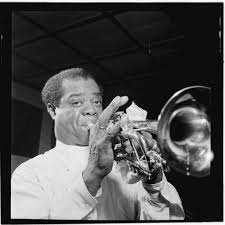

Louis Armstrong: The Father of Jazz
Louis Armstrong was a groundbreaking figure in jazz and American music. His trumpet playing, improvisational style, and unique performances set the stage for the beginnings of jazz.
Important Milestones in Armstrong's Career
- 1922: Armstrong joins the King Oliver Creole Jazz Band, his first major step in the professional music world.
- 1929: Armstrong's recording of "West End Blues" becomes a defining moment in the history of jazz.
- 1930s-1940s: Armstrong's career expands internationally, and his unique vocal style becomes a staple in jazz singing.
